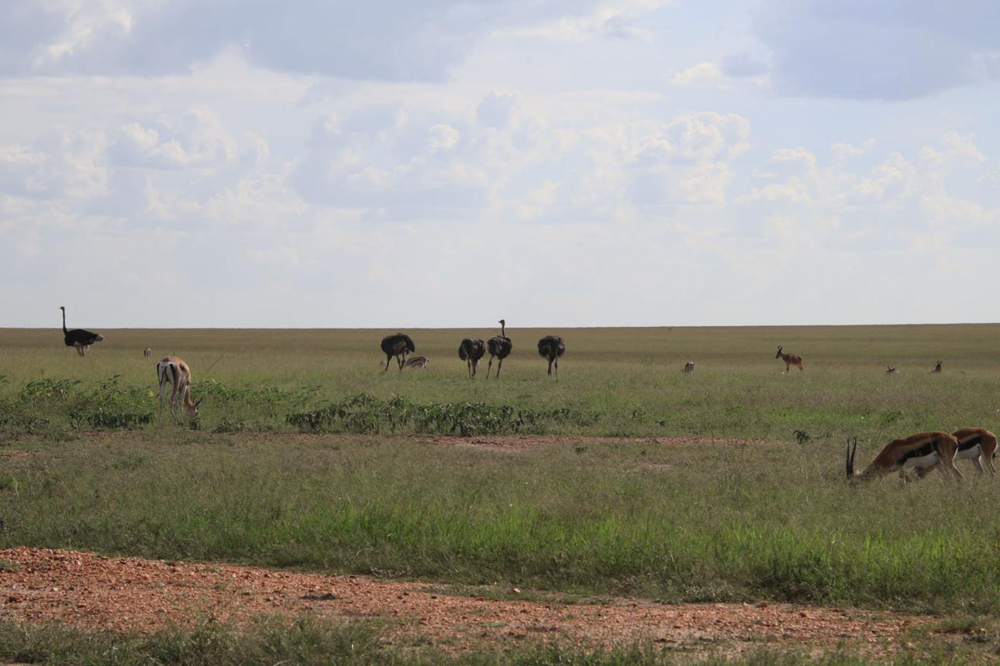
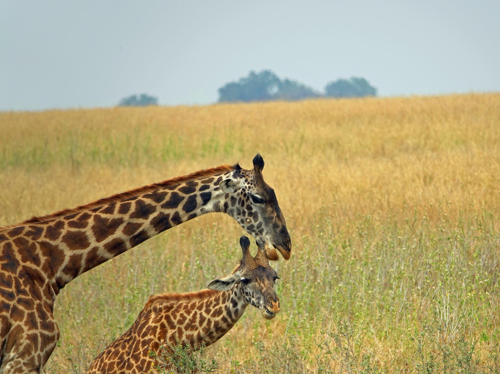
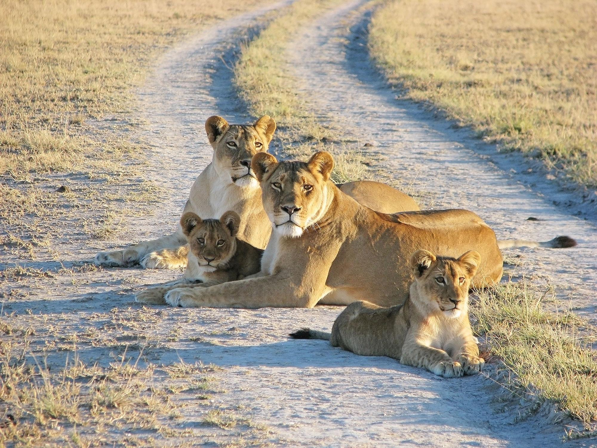

🐘 The Amazing World of Animals
Animals are an important part of our natural world. From the largest elephants to the smallest insects, every
animal plays a role in maintaining the balance of nature.
Explore the lives of different animals, learn about where they live, what they eat, and how they survive in
their natural habitats.
Discover the unique behaviors and fascinating abilities that make each species special.
Animals are consumers. They obtain energy by eating plants, other animals, or both.
Animals can be found
in
nearly every habitat on Earth, including forest
Learn about plants, oceans, deserts, grasslands, and polar regions. Their
behaviors and physical features help them survive, find food, avoid predators, and reproduce.
From the powerful lion roaming across the grasslands to the enormous elephant moving through the savanna,
animals have developed fascinating ways of finding food, protecting themselves, communicating, and caring for
their young.
Some animals live in large groups, while others spend most of their lives alone.
Plants and animals are closely connected. For example, bees and butterflies pollinate flowers while
collecting
nectar, helping plants reproduce.
In return, the plants provide food. Herbivores eat plants, carnivores
eat
other animals, and decomposers break down dead organisms, returning nutrients to the soil for plants to use
again.
🌍 Life in the Wild
Every animal has a habitat where it can find the resources it needs to survive. Forests provide shelter and food
for many birds, monkeys, insects, and other creatures. Oceans are home to whales, dolphins, sharks, turtles, and
countless smaller organisms.
Grasslands provide space for animals such as zebras, giraffes, antelopes, and lions.
Animals also have different diets. Some are herbivores, meaning they mainly eat plants. Others are carnivores,
which eat other animals. Omnivores eat both plants and animals. These different feeding habits are connected
through food chains and help maintain balance within ecosystems.
Animals come in many shapes and sizes, from tiny insects to enormous whales. Scientists estimate that millions
of
animal species live on Earth, each playing a unique role in nature.
Herbivores such as elephants, deer, and rabbits feed on plants and help spread seeds to new areas. Carnivores
like
lions, wolves, and eagles help control animal populations, preventing ecosystems from becoming unbalanced.
Omnivores, including bears and humans, eat both plants and animals.
Many animals also provide essential ecological services. Bees, butterflies, birds, and bats pollinate flowers,
allowing plants to produce fruits and seeds. Earthworms improve soil by breaking down organic matter, while
marine
animals help maintain healthy oceans.



🐘 Amazing Animal Adaptations
One of the most fascinating things about animals is their ability to adapt to their surroundings. Camels can
survive in hot, dry deserts, while polar bears have thick fur and layers of body fat that help them live in
extremely cold environments. Birds have wings that allow many species to fly, while fish have bodies and fins
adapted for life underwater.
Some animals use camouflage to blend into their surroundings. Others have sharp claws, strong teeth, shells,
horns, or other physical features that help them defend themselves. These adaptations have developed over
generations and allow animals to survive in challenging environments.
Animals and Their Importance
Animals are also important to the health of ecosystems. Bees and other insects help pollinate plants, birds and
mammals can spread seeds, and predators help control populations of other animals. Even creatures that may seem
small or unimportant can have an important role in nature.
Unfortunately, many animals face threats caused by habitat destruction, pollution, illegal hunting, climate
change, and other human activities. Protecting forests, oceans, grasslands, and other natural habitats can help
provide animals with safe places to live and reproduce.
🌱 Why Conservation Matters
Human activities such as deforestation, pollution, illegal hunting, and climate change threaten many species of
plants and animals.
When forests are cleared, countless animals lose their homes. Pollution contaminates rivers and oceans,
affecting
both wildlife and people.
Rising global temperatures alter habitats and make survival more difficult for many species.
Conservation efforts aim to protect ecosystems through national parks, wildlife reserves,
sustainable farming, reforestation, pollution reduction, and environmental education.
These actions help preserve biodiversity for future generations.
🐾 Protecting Our Wildlife


Learning about animals helps us understand why protecting nature matters. When we appreciate the wildlife around
us, we become more aware of the importance of keeping their habitats healthy.
Maria's Nature Haven invites you to discover the incredible animals that share our planet. Explore their
habitats, learn about their behavior, and discover the amazing adaptations that help them survive.
Wildlife is an important part of our planet. Every animal, from the smallest insect to the largest mammal, has a
role to play in nature. Protecting wildlife means protecting the animals themselves as well as the forests, oceans,
rivers, grasslands, and other habitats where they live.
🌳 Protecting Natural Habitats
One of the most important ways to protect wildlife is to protect their habitats. Animals need places where they can
find food, water, shelter, and safe areas to raise their young.
When forests are cut down, wetlands are destroyed, or natural areas are replaced by buildings and roads, many
animals lose their homes. Protecting forests, national parks, wetlands, oceans, and other natural areas gives
wildlife a better chance to survive.
🚯 Reducing Pollution
Pollution can seriously affect wildlife. Plastic waste, chemicals, oil, and other forms of pollution can enter
rivers and oceans and harm animals.
We can help by reducing the amount of waste we produce, recycling when possible, disposing of rubbish properly, and
avoiding throwing plastic or other waste into the environment.
🦏 Stopping Illegal Hunting
Some animals are illegally hunted for their meat, skin, horns, tusks, feathers, or other body parts. This can cause
animal populations to decline and can threaten some species with extinction.
Laws and wildlife protection programs can help prevent illegal hunting and protect vulnerable animals.
🌊 Keeping Our Oceans Clean
Many animals depend on healthy oceans. Whales, dolphins, turtles, fish, seabirds, and countless other creatures live
in marine environments.
Keeping plastic and other waste out of the ocean is an important way to protect marine life. Protecting coral reefs
and other marine habitats also helps maintain healthy ocean ecosystems.
🌱 Planting Trees
Trees provide food and shelter for many animals. Forests are home to birds, insects, monkeys, reptiles, mammals, and
countless other organisms.
Planting and protecting trees can help restore habitats and provide wildlife with places to live. Even planting
native plants in gardens can provide food and shelter for birds and insects.
🐝 Protecting Small Creatures
Wildlife protection isn't only about large animals such as elephants, lions, and tigers. Small creatures such as
bees, butterflies, ants, frogs, and other insects are also important.
For example, many insects help pollinate plants, while other small organisms contribute to healthy soil and food
chains.
“Every animal has a story. Take a moment to discover it.” 🐾🌍
📧 Contact Us | 🌍 Join Us in Protecting Nature
© 2026 Maria’s Nature Haven. All Rights Reserved. 💚